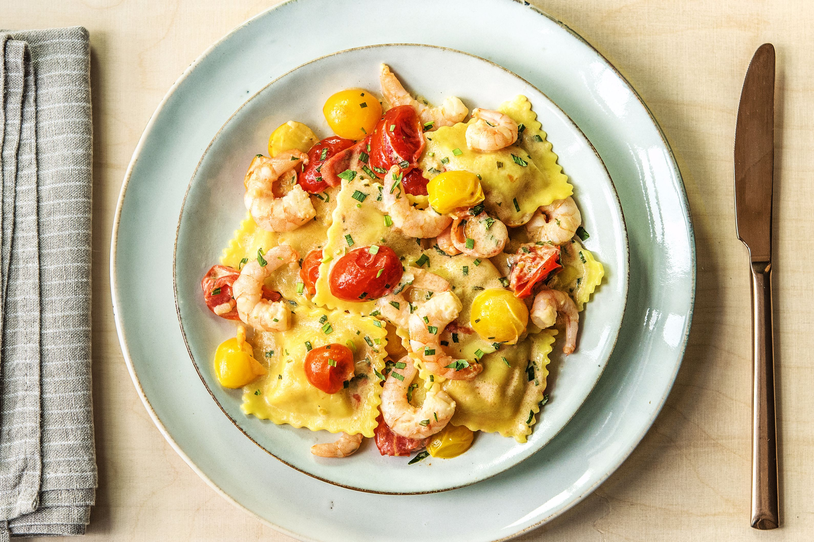

Lobster Ravioli

Description:
The lobster is simply enriched with mascarpone, aromatics, and fresh herbs, so the sweet lobster meat shines through in the finished ravioli.
Ingredients
- 1 ½ cups all-purpose flour
- 2 Eggs
- 1 tbs kosher salt
- ¾ cup mascarpone cheese
- 1 large shallot, finely chopped
- 6 tablespoons cold unsalted butter
- 3 cloves garlic, finely chopped
- 1 tablespoon finely chopped fresh chives
- 1 tablespoon finely chopped fresh tarragon leaves
- 1 tablespoon finely chopped fresh basil
- 2 teaspoons grated lemon zest
- ¼ teaspoon ground black pepper
- 8 ounces cooked lobster meat, cut into bite-size pieces
- ¾ cup bottled clam juice
- ½ cup dry white wine
- ¾ cup heavy whipping cream
- 1 cup cherry tomatoes, halved
- fresh herbs, for garnish
Steps
- Add flour, eggs and 1/4 teaspoon salt; beat it. Make a shaggy ball and Knead it into a dough until it is smooth and elastic, 10 to 12 minutes.
- Wrap dough tightly in plastic wrap; let rest at room temperature at least 1 - 2 hours, or in a refrigerator up to 1 day. (If refrigerating, let come to room temperature before rolling.)
- Place mascarpone in a small bowl; set aside. Melt 2 tbs butter in a medium skillet over medium heat. Add garlic and shallot; cook, stirring often, until softened, about 2 minutes. Stir shallot mixture into mascarpone in bowl along with herbs, lemon zest and juice, pepper, and remaining salt until combined. Gently stir in lobster. Chill, covered, for 15 minutes.
- While lobster filling chills, unwrap dough, and divide evenly into 2 portions. Place 1 dough portion on a clean work surface; wrap remaining dough portion in plastic wrap. Shape dough into a rectangle; press dough to flatten using heel of hand. Starting with the widest setting, pass dough through pasta machine 2 times. Fold the outer tapered ends of pasta sheet in toward the center like an envelope, so that the width of the pasta sheet is similar to the width of the pasta roller. Pass pasta sheet through widest setting 1 more time. Continue rolling pasta through machine, reducing roller width 1 notch at a time, until sheet is about 1/16-inch thick and you can see the outline of your hand through the sheet. Cut sheet in half crosswise to make them easier to work with. Cover 1 sheet loosely with plastic wrap. Lightly dust work surface with flour and place remaining dough sheet on surface.
- Place 1-tbs mounds of lobster filling 2 inches apart along center of sheet. Lightly brush dough around lobster filling with water. Loosely lift long edge of dough sheet and fold over filling, lining up edges, trim the unfolded edge of the ravioli. Cut pasta between mounds to form individual ravioli. Place ravioli on a baking sheet. Cover with a clean kitchen towel. Repeat process with remaining pasta sheet, dough, and filling.
- Cut remaining 4 tablespoons butter into 4 pieces. Bring clam juice and wine to a simmer in a large skillet over high heat. Simmer, undisturbed, until reduced to about 1/3 cup, about 7 minutes. Gradually stir in remaining 4 tbss butter, one piece at a time, waiting until butter is nearly melted before adding the next piece. Stir in heavy cream. Cook over high heat, stirring often, until sauce is thick enough to lightly coat back of a spoon, about 2 minutes. Stir in tomatoes. Remove from heat and cover to keep warm
- Bring a large pot of salted water to a boil over high heat. Working in 2 batches if needed, boil ravioli until tender, 4 to 6 minutes. Drain. Divide ravioli among 4 plates. Drizzle cream sauce evenly over ravioli. Garnish with herbs.